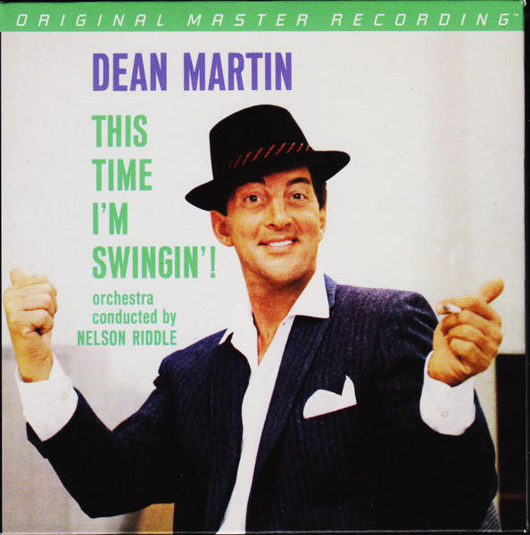

SACD
This Time I'm Swingin'
Dean Martin
Media: NM · Sleeve: NM
CA$70.00
Discogs SuggestedCA$128.39
Discogs MedianCA$128.39
Discogs HighCA$128.39
- Physical Copy ID
- BB-SACD-133
- Year
- 2013
- Label
- Mobile Fidelity Sound Lab, Capitol Records, Universal Music Special Markets
- Catalog #
- UDSACD 2135, B0019320-06, B0019320-06
- Country
- USUS
- Genre / Style
- Jazz, Pop · Swing, Vocal, Easy Listening